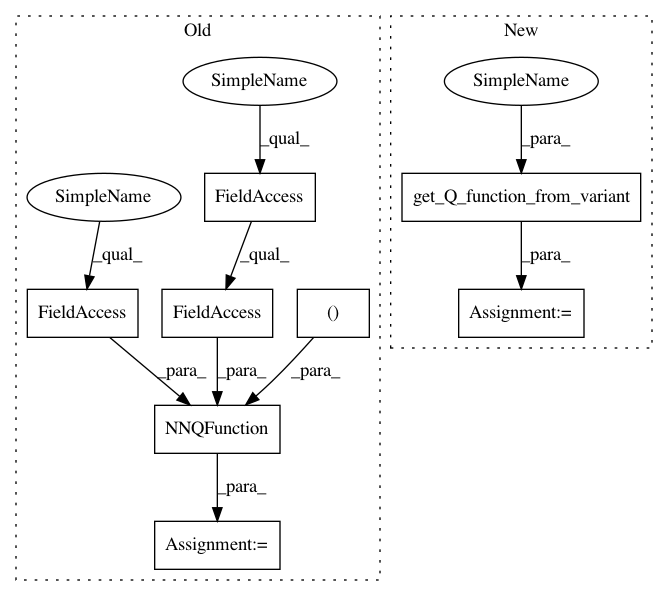

9caa24c58689c1d6f3d982f623ceab8f78e7362d,examples/mujoco_all_sql.py,,run_experiment,#Any#,81
Before Change
sampler=sampler)
M = variant["layer_size"]
qf = NNQFunction(
observation_shape=env.active_observation_shape,
action_shape=env.action_space.shape,
hidden_layer_sizes=(M, M))
policy = StochasticNNPolicy(
observation_shape=env.active_observation_shape,
action_shape=env.action_space.shape,
After Change
sampler=sampler)
layer_size = variant["layer_size"]
Q = get_Q_function_from_variant(variant, env)
policy = StochasticNNPolicy(
observation_shape=env.active_observation_shape,
action_shape=env.action_space.shape,
In pattern: SUPERPATTERN
Frequency: 3
Non-data size: 8
Instances
Project Name: rail-berkeley/softlearning
Commit Name: 9caa24c58689c1d6f3d982f623ceab8f78e7362d
Time: 2018-10-20
Author: hartikainen@berkeley.edu
File Name: examples/mujoco_all_sql.py
Class Name:
Method Name: run_experiment
Project Name: rail-berkeley/softlearning
Commit Name: 9caa24c58689c1d6f3d982f623ceab8f78e7362d
Time: 2018-10-20
Author: hartikainen@berkeley.edu
File Name: examples/pusher_pretrain.py
Class Name:
Method Name: run_experiment
Project Name: rail-berkeley/softlearning
Commit Name: 9caa24c58689c1d6f3d982f623ceab8f78e7362d
Time: 2018-10-20
Author: hartikainen@berkeley.edu
File Name: examples/multigoal_sac.py
Class Name:
Method Name: run_experiment